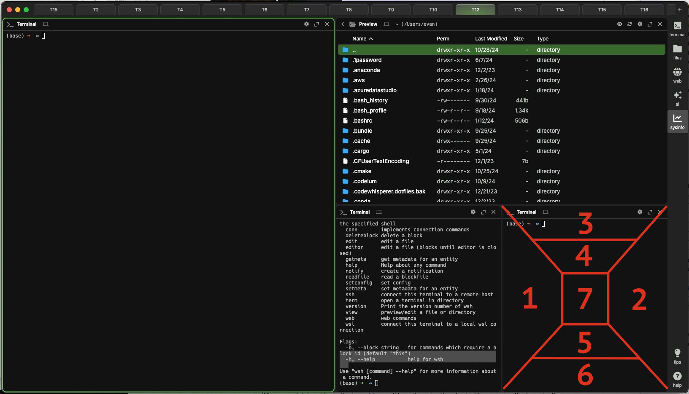

Wave is an open-source, AI-integrated terminal for macOS, Linux, and Windows. It works with any AI model. Bring your own API keys for OpenAI, Claude, or Gemini, or run local models via Ollama and LM Studio. No accounts required.
Wave also supports durable SSH sessions that survive network interruptions and restarts, with automatic reconnection. Edit remote files with a built-in graphical editor and preview files inline without leaving the terminal.
Wave Terminal README · github.com/wavetermdev/waveterm
Wave is an open-source terminal with superpowers, integrating file previews, file editing, AI, web browsing, and workspace organization.
waveterm.dev
Latest stable release: v0.14.5 · 2026-04-16 · macOS · Windows · Linux

Features
In Wave's own words, from waveterm.dev and the Wave Terminal README.



Key Features
- Wave AI - Context-aware terminal assistant that reads your terminal output, analyzes widgets, and performs file operations
- Durable SSH Sessions - Remote terminal sessions survive connection interruptions, network changes, and Wave restarts with automatic reconnection
- Flexible drag & drop interface to organize terminal blocks, editors, web browsers, and AI assistants
- Built-in editor for editing remote files with syntax highlighting and modern editor features
- Rich file preview system for remote files (markdown, images, video, PDFs, CSVs, directories)
- Quick full-screen toggle for any block - expand terminals, editors, and previews for better visibility, then instantly return to multi-block view
- AI chat widget with support for multiple models (OpenAI, Claude, Azure, Perplexity, Ollama)
- Command Blocks for isolating and monitoring individual commands
- One-click remote connections with full terminal and file system access
- Secure secret storage using native system backends - store API keys and credentials locally, access them across SSH sessions
- Rich customization including tab themes, terminal styles, and background images
- Powerful
wshcommand system for managing your workspace from the CLI and sharing data between terminal sessions - Connected file management with
wsh file- seamlessly copy and sync files between local and remote SSH hosts
Text and screenshots from Wave Terminal by Command Line Inc., Apache License 2.0. WavySync is not affiliated with Wave Terminal.